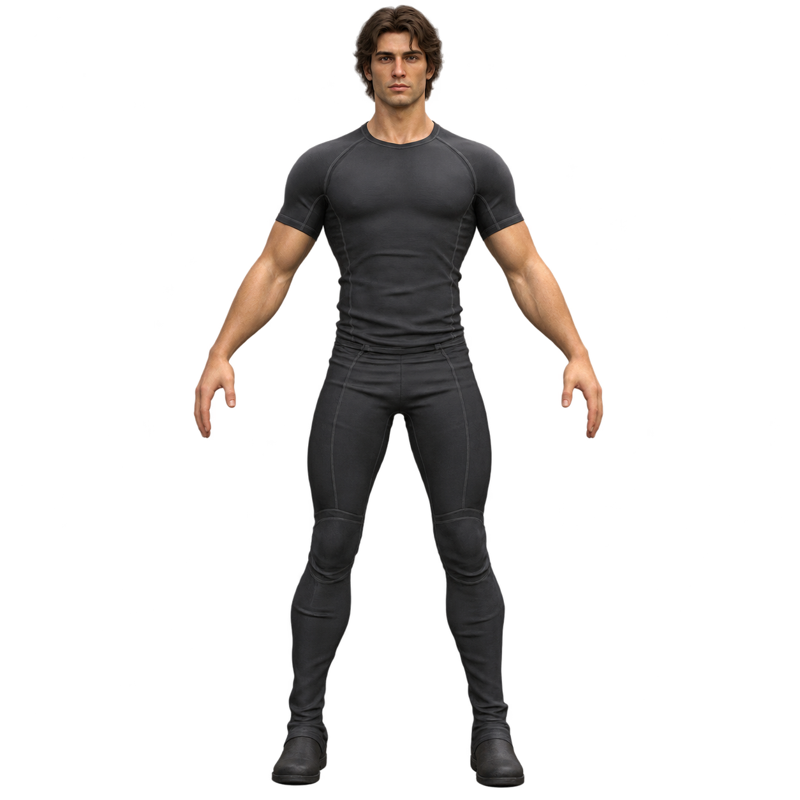
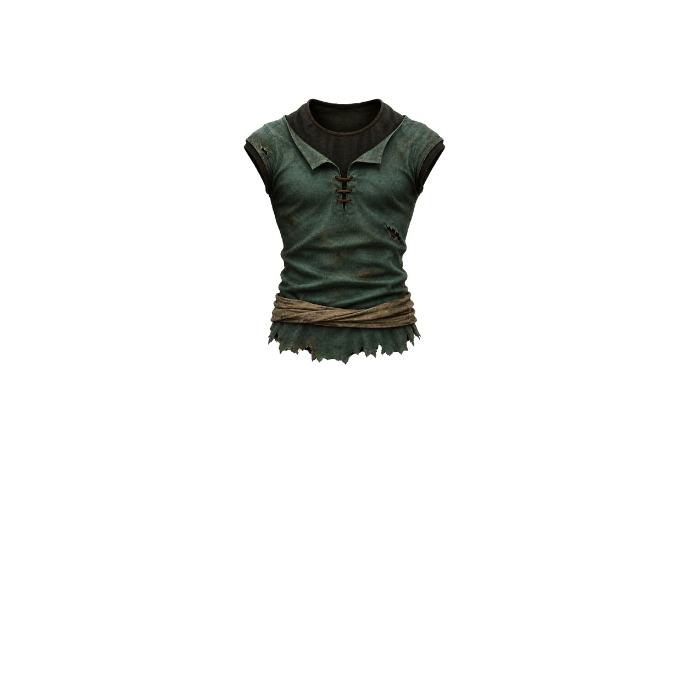

Teste de sobreposição — Ragged Clothes V2
As duas imagens são exibidas no mesmo canvas quadrado, em escala integral e sem deslocamento manual da roupa.


Prévia isolada de validação. Não altera o Provador nem os arquivos originais. Fundo quadriculado serve apenas para facilitar a inspeção da transparência.